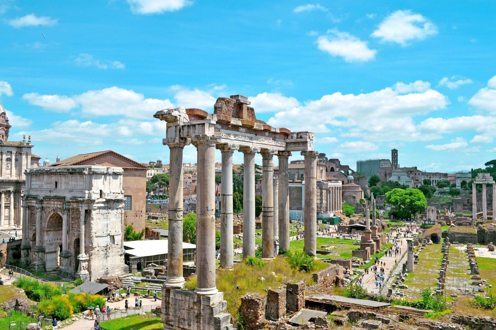

Forum Romanum

The Roman Forum was where religious and public life in ancient Rome took place. The Forum is, along with the Colosseum, the greatest sign of the splendour of the Roman Empire that can be seen today. After the fall of the Empire, the Roman Forum was forgotten and little by little it was buried under the earth. Although in the 16th century the existence and location of the Forum was already known, it was not until the 20th century that excavations were carried out. Interestingly, the place where the Forum was built was originally a marshy area. In the 6th century B.C. the area was drained by means of the Cloaca Maxima, one of the first sewer systems in the world.
Read more...
Source: Rome.net